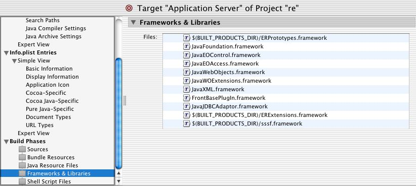
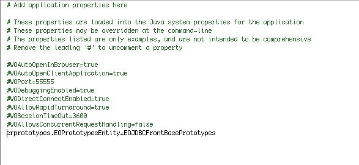

How to use ERPrototypes
- Setup the ERPrototypes framework
- Open the ERPrototypes framework and double click on the ERPrototypes icon in the Resources group.
- Check if there is an EOEntity named EOJDBC_YourDatabase_Prototypes in the model. For example for FrontBase: EOJDBCFrontBasePrototypes or for Oracle EOJDBCOraclePrototypes.
-
If the EOEntity is missing, copy EOPrototypes EOEntity and renamed it to EOJDBC_YourDatabase_Prototypes.
Edit the EOEntity and adjust the external types. For example change the external type from the attribute varcharLarge from 'LONGBLOB' to 'CLOB' if your database server uses CLOB's to store largelarge Strings.
- Build and install the Framework
-
Setup for EOModeler
If you are always using the same database server then you should copy all attributes from EOJDBC_YourDatabase_Prototypes into the EOPrototypes entity. This enables EOModeler to generate correct SQL for your database because EOModeler will only look at the attributes from 'EOPrototypes' entity to resolve the external type and size. EOModeler does not know anything about EOJDBC_YourDatabase_Prototypes entities. They are an addition to get prototypes to work but they come not with WebObjects.
-
Setup for your Frameworks:
Add the ERPrototypes framework to each framework in which you want to use the prototypes. Only open your models by clicking on them in Project Builder! Do not every open them via the Finder, and if you do, do not save them. You will lose all atribute information, resulting in very strange errors. If you have your own private prototypes, you can add them to an entity "EOJDBCPrototypes" in your own models. The attributes in this entity will get picked up from EOModeler and also the WebObjects application.
-
Setup for your Applications:
- Add the ERPrototypes and ERExtensions framework to your project
- Switch to the 'Application' target and edit this target
- You should select 'Frameworks and Libraries' and move ERPrototypes.framework
to the top of the list. This ensures that ERPrototypes is loaded before
any other framework. This is very important.
See this screenshot:

- Now edit the 'Properties' file and add a Property with key='erprototypes.EOPrototypesEntity'
and value='EOJDBC_YourDatabase_Prototypes'. You must ensure that every
model is in a framework, you cannot use Models in the Application with
this sort of Prototypes.
See this screenshot:

Please make sure that you are not using any EOModel that has an EOEntity named 'EOPrototypes'. FrontBase for example shipped their FrontBasePlugIn.framework with a EOModel that contained an EOEntity named EOPrototypes. This gives errors when you open it in EOModeler and also at runtime.